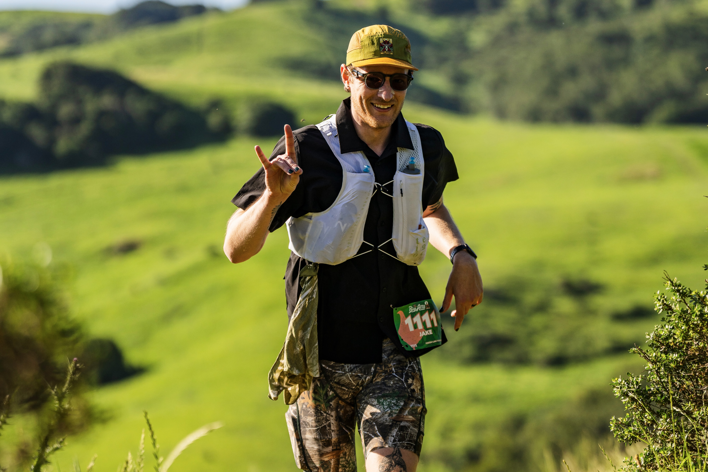
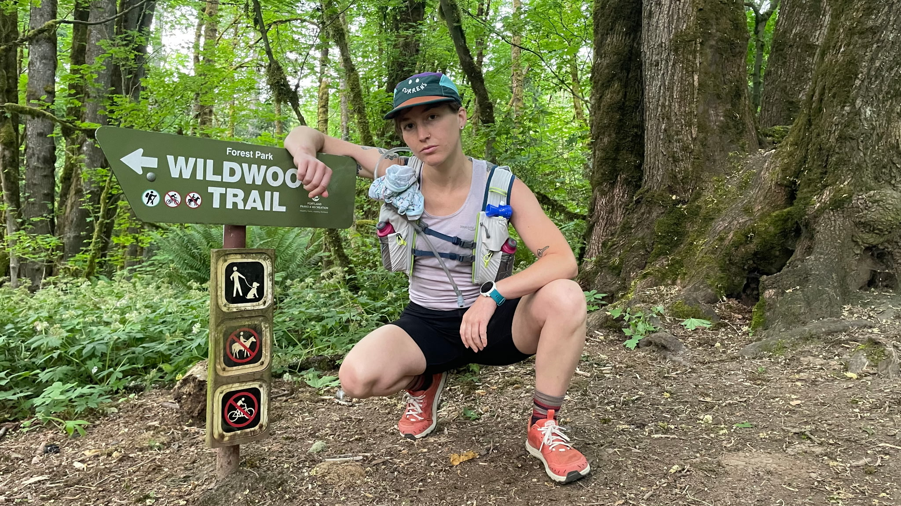

Navigating us through the trail

Jake has been running since 2020, it all began with 1 mile around the block. Now with Two 50k races under his belt, his mantra is A.M.F. (Always Move Forward)
While his legs are long, he is always down to share miles at any pace. He's here to support you achieving your highest goals!
His secret weapon on long runs is a Wonder Honey Bun.

Allie has always loved running, but fell even deeper in love with the sport after moving to Portland and discovering the wonder that is trail running. Since then, she has loved pushing herself to climb more, explore new trails, and run longer distances.
She loves sharing miles with friends- old and new, and seeing people achieve goals on the trail that they might not have known possible.